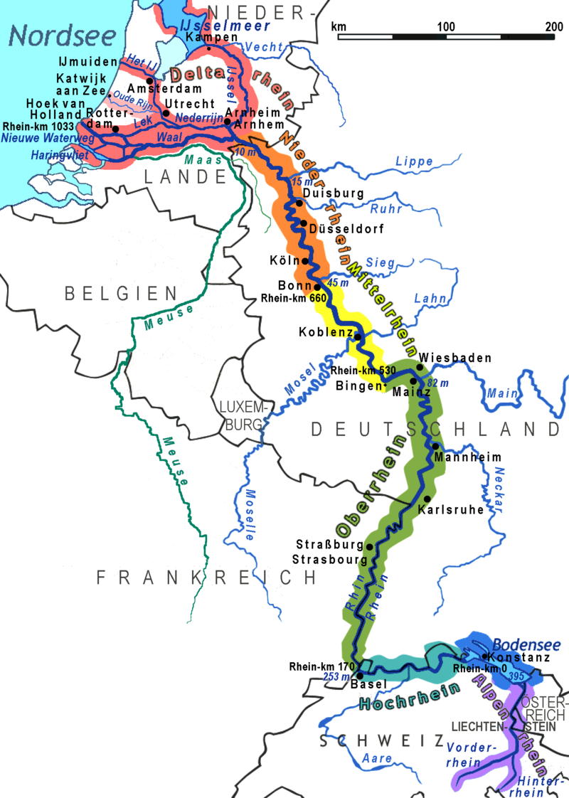
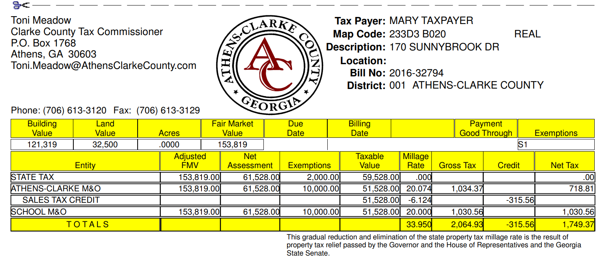
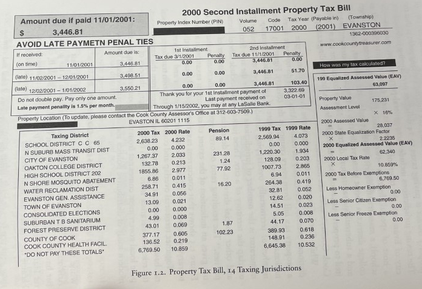
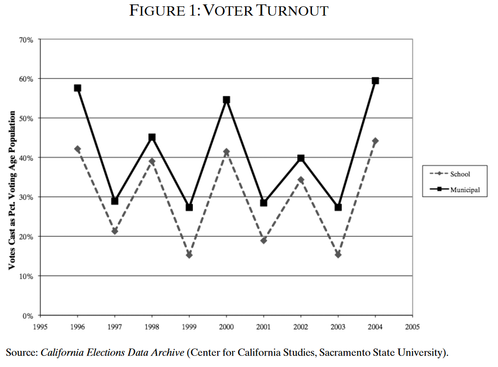

POLS 4641: The Science of Cities
Last week, we focused on horizontal fragmentation: many local governments competing for residents and investment (Tiebout 1956).
Today, two wrinkles that complicate that picture:
Vertical fragmentation: most of those ~90,000 governments are spatially overlapping – multiple jurisdictions exercising different functions over the same geographic area (Berry 2009).
Selective participation: citizens only turn out when they deeply care about a particular government’s functions, creating systematic biases in who gets represented.
Two related theoretical concepts that motivate these ideas:
Common pool resource problems (Hardin 1968).
Collective action problems (Olson 1965).
A common pool resource is a good that is:
Classic examples: fisheries, shared pastures, clean air.
The problem: each individual actor has an incentive to overuse the shared resource, ignoring the costs they impose on everyone else. Left unchecked, the result is overexploitation – “the tragedy of the commons” (Hardin 1968).
The same logic applies when multiple governments draw from the same tax base.
Each government sets its own tax rate without fully accounting for the burden this places on taxpayers alongside every other government’s levies.
Result: collectively, they tend to overtax relative to what a single consolidated government would do (Berry 2009).


There are three governments with the authority to tax my home in Clarke County.

By contrast, there are fourteen governments taxing this home in Evanston, Illinois!
If vertical fragmentation drives taxes up, why can’t voters just elect officials who promise to lower taxes?
Because keeping track of fourteen different governments is really hard!
A single local government is relatively easy to monitor and hold accountable.
Dozens of overlapping jurisdictions are not.
This is exacerbated by the fact that local governments almost always hold their elections off-cycle.
Most counties, cities, special districts, and school districts hold elections off-cycle – i.e. not on Election Day.
Far fewer voters turn out when there are no state or federal offices on the ballot (Berry and Gersen 2010).
Historically, off-cycle election timing was part of a broad set of political reforms implemented during the Progressive Era (early 20th century).

Low turnout doesn’t mean random turnout.
Those who turn out to vote tend to be groups with a strong, concentrated interest in the outcome:
Teachers’ unions turn out heavily in school board elections (Sarah F. Anzia 2012b).
Homeowners are much more likely to vote in municipal elections (Yoder 2020).
Or people with a high propensity to vote regardless of timing:
These patterns in voter turnout reflect a collective action problem (Olson 1965).
Certain groups of voters have a concentrated interest in higher public spending, so are particularly motivated to vote.
Most voters have a diffuse interest in policy outcomes: they’ll pay slightly higher taxes. This is rarely enough to motivate participation.
In 2006, Texas passed HB 1, which compelled 20% of the state’s school districts to switch from off-cycle to on-cycle election timing.
In 2018, California passed a more sweeping law—the “California Voter Participation Rights Act” (CVPRA)—requiring all local governments to switch their timing concurrent with statewide elections.
Lots more people now vote in California local elections. Voters who turn out are younger, more diverse, and more likely to rent.
Some evidence that Latino candidates are more likely to win local public office after CVPRA(Hajnal, Kogan, and Markarian 2025).
No clear evidence that CVPRA has affected taxes, public spending, or teacher salaries (Ornstein 2024).